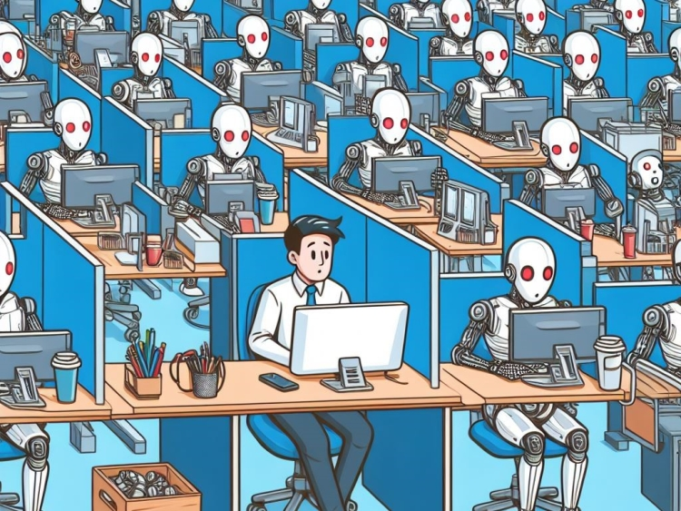

In today’s day and age, the evolution of AI is unprecedented. With the rise in AI, many are wondering how it will impact the job market overall, many fear for their jobs while others are learning to collaborate with it. We see that many people are more scared of modern technology rather than excited about it due to that initial fear of "Is a robot going to replace me?", and I am here to try and help calm that fear down. AI tools are constantly evolving and will continue to evolve, we as consumers should embrace this rather than run away from it. In the IT Field, it can be more of a help than a burden, in my own experience, I have used LLMs countless times to help problem solve issues that me and my team could not figure out. It is not an everyday tool we use and still heavily rely on human input, but when it comes to coding and getting into the nitty gritty of IT, these LLMs and AI tools can be a serious help to see what a human eye would not catch.

TThe video emphasizes that AI is reshaping the world’s workforce by the types of skills employees are now needing to have, rather than fully replacing human workers. This is important in the IT industry, as many of the everyday tasks we use in the field are automated/monitored with new AI tools, but the human element is still needed to make sure that the AI is being used correctly and to its full potential. It is still up to us to make sure that we are using the tools correctly and not rely on them too much, but when used correctly, AI can be a powerful tool to help us be more productive and efficient in our work.
Artificial intelligence should not be viewed simply as a threat to jobs, but as a tool that gives us better productivity and helps with innovation. In IT careers especially, AI can support by answering questions we may not be able to answer quickly, reduce manual tasks, and help solve complex technical problems faster. As technology continues to evolve, those who embrace AI and learn how to collaborate with it will be best suited to excel and thrive in the pristine environment, while those who fear it and run away from it may find themselves left behind.